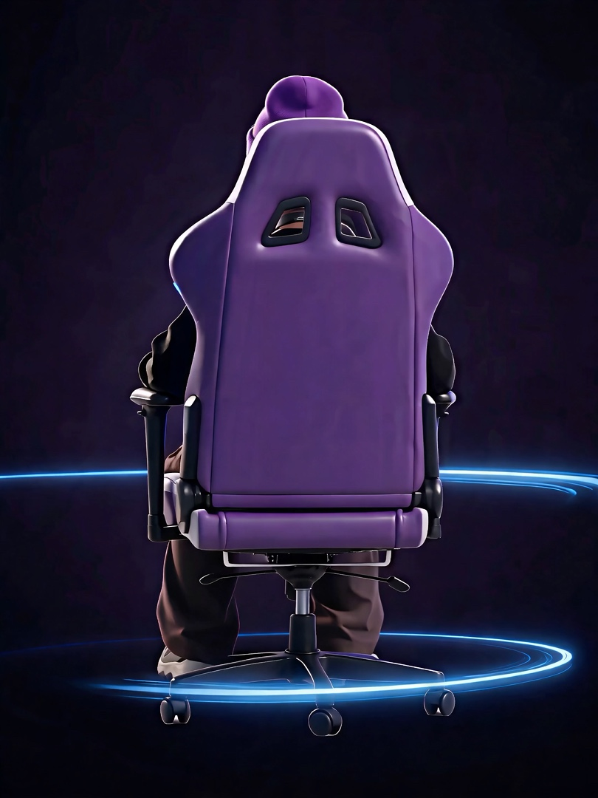

01 / FIRST ENCOUNTERSCROLL TO EXPLORE
你好，很高兴认识你。
设计，
从好奇开始.
我是 杨化超，一名 UI 设计师。
在理性与感性之间，寻找恰好的体验。
播放结束后向下滚动
01 / 02
02 / THE JOURNEY从实践里，找到自己的设计方法。

YANG HUACHAO02 / 04
让设计有表达，
也有落地的能力。
也有落地的能力。
ABOUT ME / 个人履历
从界面，到真实体验。
4 年 UI 设计经验，参与 App、Web 与品牌视觉项目，推动设计从需求走向落地。
4年UI 设计经验
1,500以上累计页面输出
01产品设计与上线
常用工具
Figma · Sketch · MasterGo · Photoshop · After Effects · Claude Code · GPT-Codex
教育背景
山东理工大学 / 环境设计本科 / 2019 — 2023
工作经历EXPERIENCE / 2022 — 2026
UI 设计师 · 2025.03 — 2026.11
把设计规范，带进产品与 AI 工作流。
主导 AI 开发平台设计侧落地，并负责多款平台、移动端及 Pad 端产品从 0 到上线的设计。
- 制定 AI 生成 UI 的内容、交互与视觉规范，内部验证产品整体开发效率提升 40%。
- 累计输出 800+ 页面，跟进研发还原与走查，保障上线质量。
- 从 0 搭建统一设计组件库，覆盖基础组件、业务组件与使用文档。
下一章打开作品文件夹
03 / SELECTED WORKS01—06
SELECTED WORKS / 作品文件夹
打开作品，看看细节。
从界面布局到交互动效，点击下方封面，查看每个项目的完整设计图。
杨化超 · 设计作品无限可能
04 / STILL EXPLORING故事未完，下一页一起写。